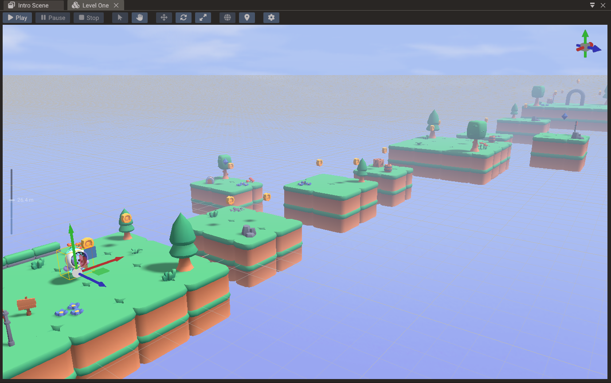
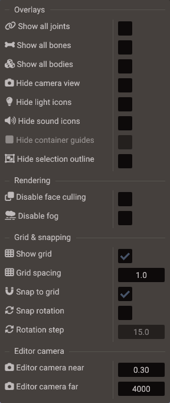
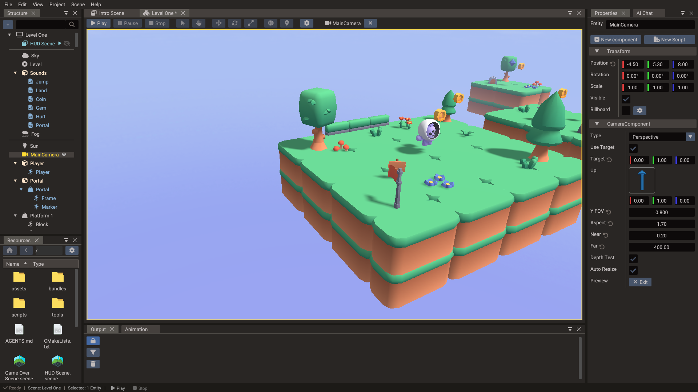
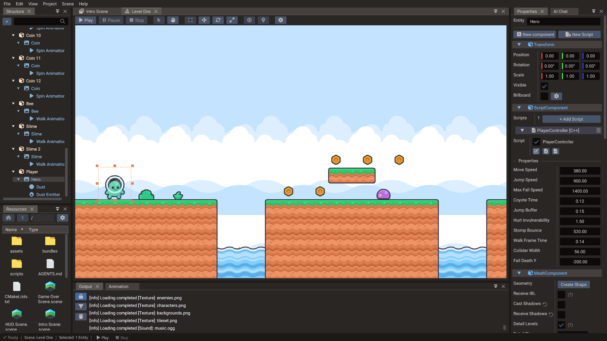
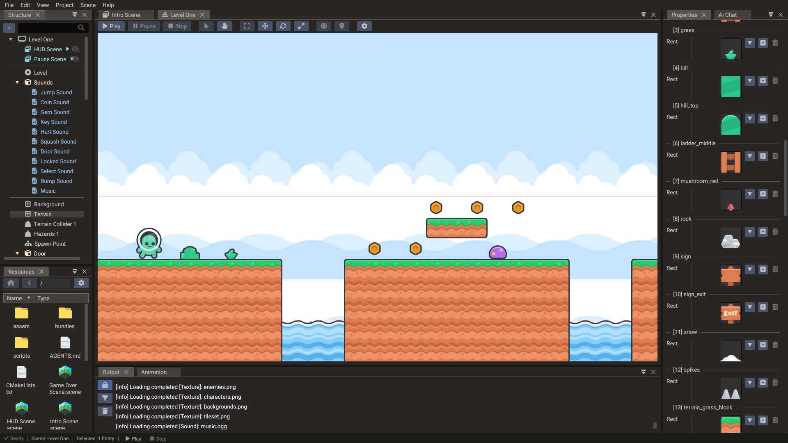
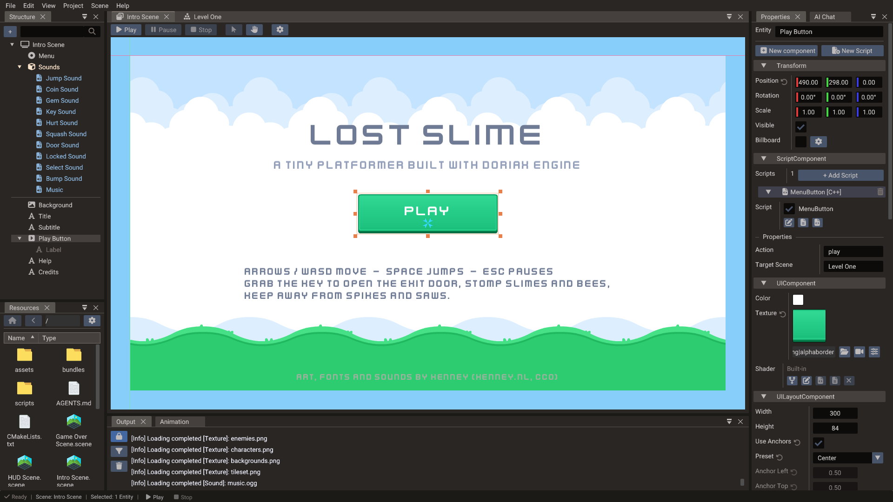
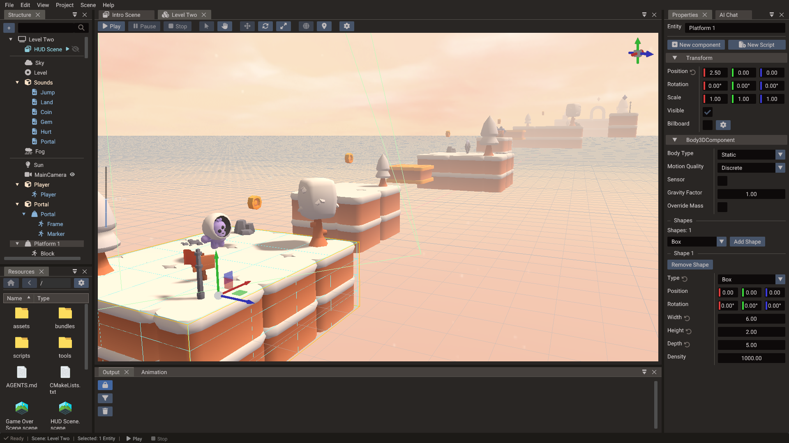

Scene View¶
The Scene view is the main canvas for authoring scenes. It renders the current scene using editor cameras and overlays gizmos, selection highlights, and tool guides on top. You place, rotate, scale, and test entities here, and you see the result of component changes made in the Properties window immediately.

Navigation¶
| Action | Input |
|---|---|
| Orbit | Right-click drag (3D) |
| Pan | Middle-click drag, or Shift + right-click drag |
| Zoom | Mouse wheel |
| Focus on selection | F key |
| Reset camera | Home key or double-click empty space |
In 2D mode the camera is orthographic; orbit is replaced with a simple pan.
Gizmo tools¶
Select a gizmo mode from the toolbar or with the keyboard:
| Gizmo | Key | Purpose |
|---|---|---|
| Translate | W | Move selected entities along axes or planes |
| Rotate | E | Rotate selected 3D entities |
| Scale | R | Resize entities uniformly or per axis |
| Object2D | — | Manipulate 2D objects in canvas space (position and size) |
| Anchor | — | Edit UI anchor points and layout bounds |
Hold Ctrl while transforming to snap to the configured grid interval. Hold Alt to move in world space instead of local space.
Viewport settings¶
Open the gear button on the scene view toolbar to toggle display and snap options
for the current scene. They are saved per user in .quantum/user/workspace.yaml, not in
the scene file. They are grouped into Overlays, Rendering, Grid & snapping,
and Editor camera sections.

| Setting | Applies to | Purpose |
|---|---|---|
| Show all joints / Show all bones / Show all bodies | All scene types | Draw every physics joint, skeleton bone, or collision shape, not only the selected entity's. Unavailable while playing |
| Hide camera view | All scene types | Hide camera icons and frustums |
| Show full camera frustum | All scene types | Draw camera frustums out to their far clip plane, not just a short preview |
| Hide light icons | 3D | Hide light icons |
| Hide sound icons | All scene types | Hide sound source icons |
| Hide container guides | 2D / UI | Hide the outlines of UI containers |
| Show origin axis | 2D / UI | Draw the axes through the scene origin |
| Hide selection outline | All scene types | Hide the outline drawn around selected entities |
| Disable face culling | 3D | Draw back faces in the editor view. Unavailable while playing |
| Disable fog | All scene types | Draw the editor view without the scene's Fog. Unavailable while playing |
| Disable underwater | 3D | Draw the editor view as if the camera were never inside a Water, so the underwater fade does not cover it when the camera dips below the surface. Unavailable while playing |
| Show grid | All scene types | Draw the editor grid overlay |
| Grid spacing | All scene types | Interval used by the grid and by Snap to grid. In 2D and UI scenes it is shown while the grid is on |
| Snap to grid | All scene types | Snap transforms to the configured grid spacing |
| Snap tile | 2D / UI | Snap Tilemap tiles to their own width and height so they pack edge-to-edge |
| Snap rotation / Rotation step | All scene types | Snap rotations to the configured step (degrees) |
| Editor camera near / Editor camera far | 3D | Clip planes of the editor camera |
Snap tile takes priority over Snap to grid while you move or resize an individual tile inside a Tilemap. Turn it on when laying out floors, walls, or other tiled content that should sit flush without relying on the global grid.
Selection¶
Click an entity in the viewport to select it; the Properties window updates immediately. Hold Ctrl and click to add to or remove from a multi-selection.
Selection respects the Structure panel expand state: if the hit entity is under a collapsed parent, the editor selects that visible ancestor instead of a hidden child. Expand the parent in Structure when you need to pick a specific child mesh or node (common with multi-node and animated models).
For fine-grained selection in dense scenes, use the Structure panel — clicking a row there selects the entity without needing to click through overlapping objects.
Entities the game creates while playing can only be picked in the viewport while the camera is detached; otherwise select them in the Structure panel.
Drag and drop from the Resources Browser¶
Files dragged from the Resources Browser can be dropped directly into the viewport. The editor shows a live preview while you hover, and the change is only committed (undoably) when you release the mouse:
Creating entities¶
| File | Scene type | Result |
|---|---|---|
| Model (GLTF/GLB/OBJ/FBX) | 3D | Creates a Model entity at the drop position, named after the file |
| Image | 2D, on empty space | Creates a Sprite entity at the drop point, sized to the image |
| Image | UI, on empty space | Creates an Image widget at the drop point, sized to the image |
While dragging an image over empty space, a half-transparent ghost of the texture follows the cursor so you can place it precisely before dropping.
Modifying the entity under the cursor¶
Dropping a file onto an existing entity assigns it instead of creating something new. The hovered entity previews the change live; moving away before releasing restores the original value:
| File | Target entity | Result |
|---|---|---|
| Image | Mesh-based entity (sprite, mesh, model) | Sets the base color texture of the material |
| Image | UI widget | Sets the widget texture |
Material (.material) |
Mesh-based entity | Links all submeshes to the material file (live preview while hovering) |
| Font (TTF/OTF) | Text entity | Sets the text font |
This makes texturing a scene fast: drop a texture onto each model to assign it, or drop a saved material onto several meshes to keep them consistent.
Shared materials across meshes¶
When you drop the same .material file onto different mesh entities, each submesh
links to that file. Editing the material in Properties (while linked) or saving the
.material file on disk updates every linked mesh.
To create a new shared material from an existing look:
- Tune the material on one mesh in Properties.
- Drag its material preview into the Resources Browser to create
Material.material. - Drag that file onto other meshes in the Scene view.
Use the unlink control in Properties when a mesh needs a one-off variation copied from a shared file.
Bundles and scenes drop on the Structure panel
.bundle and .scene files are instanced by dropping them on the
Structure panel, not the viewport — the tree controls where the
instance is parented. See Bundles.
Viewport camera vs game camera¶
The editor camera is only for authoring navigation. The game camera is a
Camera entity you place in your scene; it defines what the player sees at runtime.
Always verify gameplay framing with the game camera preview before testing: select the
camera and click View on the Preview row of its CameraComponent. The toolbar
shows the camera's name while you look through it; click Exit (or the × beside
the name) to return to the editor camera. While the game runs, the viewport shows the
game camera; detach the camera to look around with the editor camera.

2D and tilemap editing¶

In a 2D scene the editor uses orthographic projection and a canvas overlay. Sprites, tilemaps, UI widgets, and polygons should be positioned in a consistent logical coordinate system so that canvas scaling stays predictable across different screen sizes.
Tilemap cells can be painted directly in the scene view when a Tilemap entity is selected and the tile-paint mode is active.

Placing and grouping tiles¶
Drag a tile rect from the Tilemap palette onto the viewport to place it. With Snap tile enabled in the viewport settings:
- Dropped tiles snap to multiples of their own size in the tilemap's local space.
- Dragging or resizing a selected tile with the Object2D gizmo snaps the same way, so neighboring tiles line up edge-to-edge.
Use Snap to grid instead when tiles should align to the scene grid rather than to each other. See also Tileset Slicer.
2D lights and occluders¶
2D lights show a bulb icon in the viewport — click the icon to select the light and drag it to move it. While selected, the light's range is drawn as a circle.
Selecting an entity with an Occluder2D component shows its outline. For polygon occluders, each point gets a small handle:
- Click a handle to select that point (it also highlights in the Properties point list), then drag the move cross to reposition it. The drag is a single undo step and respects snap-to-grid.
- Click the occluder body to go back to entity-level selection, or click another handle to switch points.
Standalone occluder entities (no sprite) are selected by clicking anywhere inside the polygon's bounds. See 2D Graphics — 2D shadows.
3D scene editing¶
3D scenes use perspective projection and full 3D gizmos. Switch between the editor camera and the game camera preview to check framing. Use the F key to center the view on a selected entity.
Editing movement paths (TranslateTracks)¶
Selecting a TranslateTracks entity draws its movement path in the viewport: a polyline through the keyframe positions with a handle at each point, shown in the space the values play back in (the action target's parent space). The path renders on top of scene geometry, so waypoints lying on floors or inside meshes stay visible.
- Click a handle to select that point — it highlights and the translate gizmo (move cross in 2D scenes) jumps to it.
- Drag the gizmo to move the point. The drag is a single undo step, respects
snap-to-grid, and updates the track's
valueslist live in the Properties window. - Click empty space or another entity to return to normal selection.
Keyframe times and per-segment easing are edited in the Properties window; see Keyframe tracks.
UI scene editing¶
UI scenes display the canvas in screen-space overlay mode. Anchor gizmos show the layout boundaries of UI elements. Drag anchors directly to reposition or stretch widgets relative to their parent.

Physics visualization¶
When a Body2D or Body3D is attached, the editor draws the collision shape outline
in the viewport. This lets you verify that the physics shape matches the visual mesh
without running the game. Shapes are drawn for the selected entity; turn on
Show all bodies in the viewport settings to draw every body.

Play mode in the viewport¶
Press Play to run the scene inside the viewport. All input and logic operate normally. While the viewport has focus the game gets every key, Escape included, so a pause menu bound to it works. When you press Stop, the scene is restored to the pre-play snapshot. Entities spawned by scripts during play are removed even if they never appeared in the Structure panel. Pending sprite frame selections from play are cleared so they cannot overwrite the restored texture rectangles after Stop. Use play mode for fast local iteration; export to a real build for platform-specific testing.
Play mode follows Project → Project Settings → VSync. With VSync disabled, the editor render loop is uncapped while a scene is running; after you stop, frames follow Editor Settings → Editor VSync instead. See Project Workflow — VSync and Editor VSync.
The editor footer on the right shows FPS, frame time, draw calls, and triangles for the
last drawn frame — the same counters Engine::getFrameStats() returns. For a scripted
capture with VSync forced off, use
quantum-editor benchmark.
Touch simulation¶
The phone button after the play controls makes Play behave like a touch device.
System::isTouchDevice() returns true,
and the left mouse button acts as one finger: pressing starts a touch, dragging moves it,
and releasing ends it. As on a phone, the game gets touch events instead of mouse events,
so there is no hover, right click, or scroll. The keyboard still works. The setting is
saved per user in .quantum/user/workspace.yaml and can only be changed while nothing is
playing.
Detached camera¶
The camera button next to Stop (or F8, or Scene → Detach Camera) switches
a running or paused scene from the game camera to the editor camera. The game keeps
running: scripts, physics, and audio still use the game camera, and Scene::getCamera()
still returns it.
While detached:
- The editor overlays come back, including the game camera's frustum and the icons of lights, cameras, and sounds the game creates.
- You can navigate, frame entities with F, and select them by clicking or with a selection box, including entities the game created.
- Gizmos stay hidden, so entities can't be moved from the viewport.
- The game gets no mouse or keyboard input, and a captured or hidden cursor is released.
Press F8 again to return to the game camera. Stop always returns to the editor view. While the scene is paused on the game camera, the viewport ignores the mouse; detach to look around.